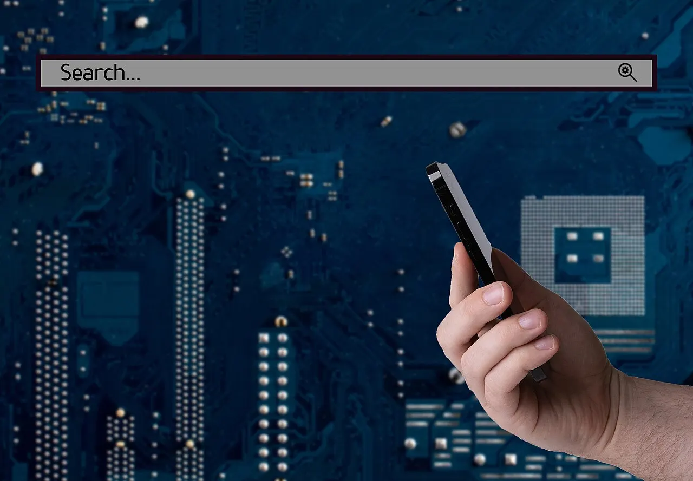

램이 체감 성능을 가릅니다

AI 스마트폰의 경쟁은 카메라 화소나 화면 밝기만으로 설명하기 어려워졌습니다. 사용자가 실제로 체감하는 차이는 사진 보정, 통화 요약, 문서 정리, 일정 추천 같은 기능이 기기 안에서 얼마나 빨리 이어지는지입니다. 이때 필요한 것은 연산 칩뿐 아니라 충분한 램입니다. 모델이 메모리에 올라오지 못하면 기능은 있어도 실행 속도가 느려지고 배터리도 더 빨리 소모됩니다.
온디바이스 AI는 개인정보를 기기 밖으로 덜 보내는 장점이 있지만, 그만큼 스마트폰 내부 자원을 더 많이 씁니다. 텍스트 요약은 가볍게 보일 수 있어도 사진, 음성, 위치, 앱 사용 기록을 함께 이해하려면 메모리 여유가 필요합니다. 램이 부족하면 AI 기능이 백그라운드 앱을 밀어내고, 사용자는 다시 앱이 새로 열리는 불편을 느낍니다.
제조사 입장에서는 램을 늘리는 일이 쉬운 선택만은 아닙니다. 메모리 가격이 올라가면 보급형 모델 원가가 바로 흔들립니다. 고급형은 성능을 앞세울 수 있지만 중가형은 저장공간, 배터리, 카메라와 원가를 나눠야 합니다. 그래서 2026년 AI폰은 기능 목록보다 모델별 램 차이가 더 큰 구매 기준이 될 가능성이 큽니다.
개인정보는 옵션이 아닙니다
AI폰이 사용자의 일정을 정리하고 사진 속 문서를 읽고 통화 내용을 요약하려면 매우 사적인 데이터에 접근해야 합니다. 단순히 클라우드가 빠르다는 이유만으로 모든 처리를 서버로 보내면 신뢰를 얻기 어렵습니다. 사용자는 어떤 데이터가 기기 안에 남고, 어떤 데이터가 외부 처리로 넘어가는지 알아야 합니다.
좋은 설계는 기능을 끄기 쉽게 만드는 데서 시작합니다. 연락처, 위치, 사진, 메시지, 음성 녹음 권한을 한 화면에서 확인하고, AI 기능별로 허용 범위를 바꿀 수 있어야 합니다. 개인정보 보호는 광고 문구가 아니라 설정 화면의 구조와 로그 삭제 방식에서 확인됩니다.
기업용 스마트폰 시장에서는 이 문제가 더 큽니다. 회사 자료가 AI 요약에 들어가고 회의록이 자동 생성될수록 보안 담당자는 데이터 이동 경로를 요구합니다. 기기 안 처리와 기업 관리 솔루션이 함께 맞지 않으면 AI폰은 업무용 도입에서 막힐 수 있습니다.
발열은 기능을 짧게 만듭니다
AI 기능은 처음 한 번 실행될 때보다 연속으로 사용할 때 차이가 드러납니다. 사진 여러 장을 분석하고, 긴 통화를 요약하고, 화면을 보며 실시간 번역을 돌리면 작은 기기 안에서 열이 쌓입니다. 발열이 커지면 칩은 속도를 낮추고, 사용자는 기능이 갑자기 느려졌다고 느낍니다.
배터리도 같은 문제를 만납니다. 클라우드 처리보다 온디바이스 처리가 항상 전력을 덜 쓰는 것은 아닙니다. 네트워크 전송은 줄어도 기기 안 연산이 늘면 배터리 부담이 커집니다. 그래서 좋은 AI폰은 벤치마크 점수보다 열 관리, 배터리 용량, 충전 속도, 소프트웨어 최적화가 같이 맞아야 합니다.
이 지점에서 제조사 간 차이가 벌어집니다. 일부 기능은 기기에서 처리하고, 무거운 작업은 서버로 넘기며, 민감한 정보는 익명화하거나 즉시 삭제하는 균형이 필요합니다. 사용자가 원하는 것은 모든 계산을 기기에서 한다는 선언이 아니라 빠르고 안전하게 끝나는 경험입니다.
교체 이유는 생활 속에 있습니다
AI폰이 실제 교체 수요를 만들려면 사용자의 하루 안에 들어와야 합니다. 회의 내용을 바로 정리하고, 여행 일정의 변경을 알려주고, 영수증과 메모를 자동으로 묶고, 통화 후 해야 할 일을 정리해 주는 식입니다. 이런 기능이 자연스럽게 이어질 때 사용자는 새 기기의 필요를 느낍니다.
하지만 기능이 앱마다 흩어져 있거나 권한 요청이 매번 뜨면 피로가 먼저 옵니다. AI는 보이지 않게 도와줄수록 가치가 커집니다. 반대로 과하게 개입하면 알림이 늘고 사용자는 기능을 꺼 버립니다. 제조사가 해결해야 할 일은 더 똑똑한 기능만이 아니라 덜 귀찮은 사용 흐름입니다.
구매 기준은 결국 세 가지로 좁혀집니다. 충분한 램과 저장공간, 분명한 개인정보 통제, 발열과 배터리 안정성입니다. 카메라와 디자인은 여전히 중요하지만 AI폰이라는 이름을 붙이려면 이 세 조건이 먼저 통과돼야 합니다.
관련 영상
온디바이스 AI가 다시 주목받는 이유
AI 스마트폰은 화려한 시연보다 반복 사용에서 평가받습니다. 하루 종일 써도 느려지지 않고, 민감한 데이터가 어디로 가는지 보이며, 배터리가 버텨야 합니다. 그 조건이 맞을 때 AI는 새 기능이 아니라 교체 이유가 됩니다.
AI 스마트폰 업그레이드는 카메라보다 램과 개인정보 처리에서 갈립니다을 볼 때는 발표 직후의 반응보다 다음 분기까지 이어지는 숫자를 함께 확인하는 편이 좋습니다. 단기 뉴스는 방향을 빠르게 바꾸지만 실제 변화는 계약, 예산, 생산, 소비 습관처럼 느린 항목에서 굳어집니다. 이 차이를 나누어 보면 과장된 기대와 실제 지속 가능성을 구분할 수 있습니다.
가장 실용적인 점검 방법은 한 가지 지표에 기대지 않는 것입니다. 가격, 수요, 비용, 규제, 실행 시간이 같은 방향으로 움직이는지 확인해야 합니다. 어느 하나만 좋아도 나머지가 따라오지 않으면 결과는 늦어지고, 여러 조건이 동시에 맞으면 변화는 예상보다 빠르게 확산될 수 있습니다.
이 주제는 한 번의 결론보다 관찰 순서가 더 중요합니다. 먼저 현재 병목을 확인하고, 그다음 누가 비용을 부담하는지 보며, 마지막으로 그 부담이 가격이나 행동 변화로 이어지는지 봐야 합니다. 그렇게 읽으면 제목보다 구조가 먼저 보입니다.
AI 스마트폰 업그레이드는 카메라보다 램과 개인정보 처리에서 갈립니다을 볼 때는 발표 직후의 반응보다 다음 분기까지 이어지는 숫자를 함께 확인하는 편이 좋습니다. 단기 뉴스는 방향을 빠르게 바꾸지만 실제 변화는 계약, 예산, 생산, 소비 습관처럼 느린 항목에서 굳어집니다. 이 차이를 나누어 보면 과장된 기대와 실제 지속 가능성을 구분할 수 있습니다.
가장 실용적인 점검 방법은 한 가지 지표에 기대지 않는 것입니다. 가격, 수요, 비용, 규제, 실행 시간이 같은 방향으로 움직이는지 확인해야 합니다. 어느 하나만 좋아도 나머지가 따라오지 않으면 결과는 늦어지고, 여러 조건이 동시에 맞으면 변화는 예상보다 빠르게 확산될 수 있습니다.
이 주제는 한 번의 결론보다 관찰 순서가 더 중요합니다. 먼저 현재 병목을 확인하고, 그다음 누가 비용을 부담하는지 보며, 마지막으로 그 부담이 가격이나 행동 변화로 이어지는지 봐야 합니다. 그렇게 읽으면 제목보다 구조가 먼저 보입니다.